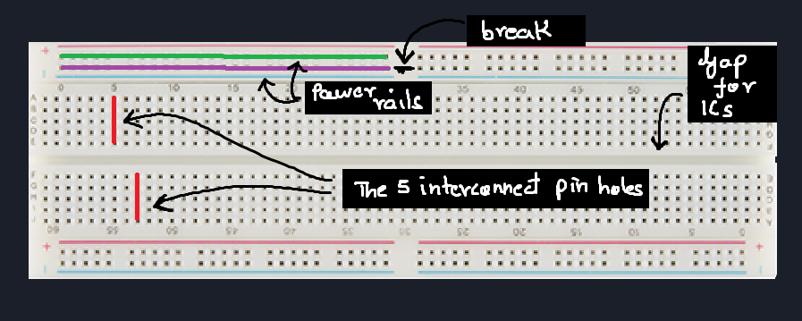
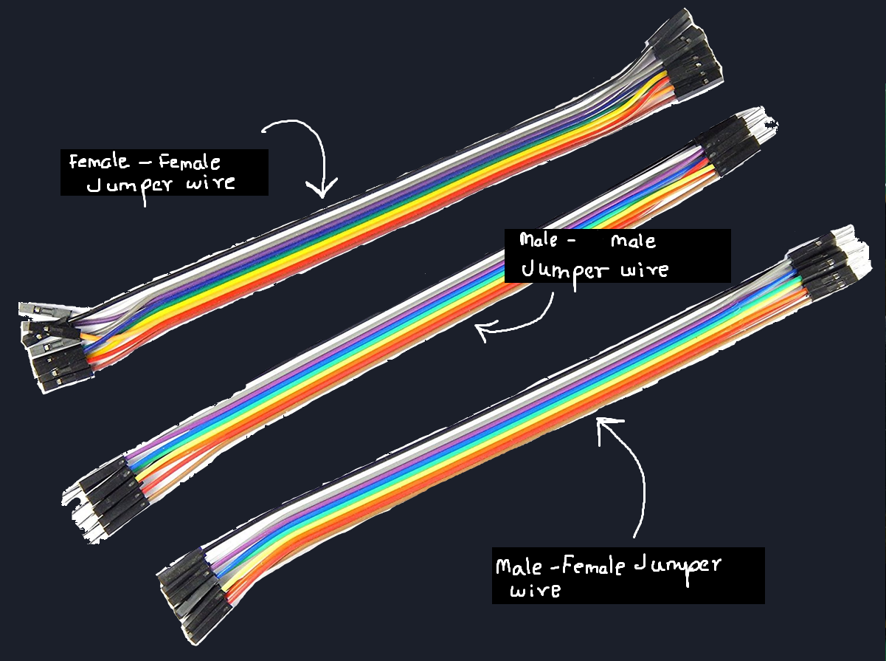
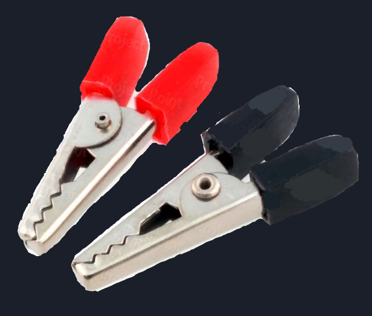
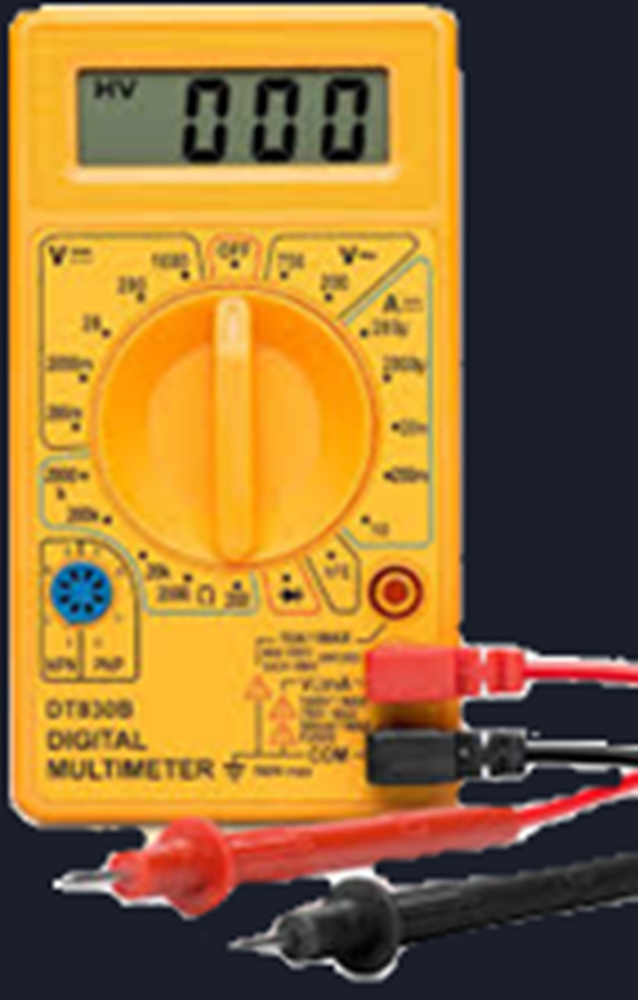
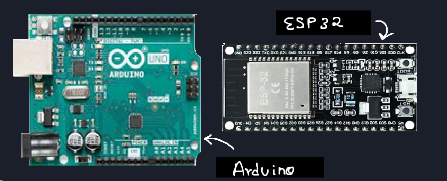
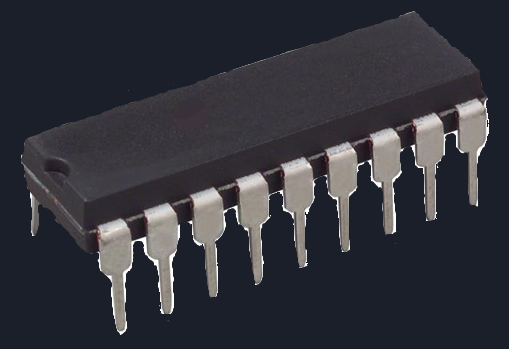

This first post is exactly about that.
Before sensors, before projects, before code,
we need to understand the basic tools and components of the electronic world — the things you’ll touch in every build.
This post doesn’t teach theory.
It teaches familiarity.
🧱 1. Breadboard — Your Battlefield
A breadboard exists so you can build, break, and rebuild circuits without soldering.
It is a temporary prototyping platform.
Inside it are metal strips that electrically connect certain holes.
It is for:
Learning
Experimenting
Making mistakes safely
Not for:
Permanent circuits
High-current loads
High-frequency precision
🔹 Types of Prototyping Boards
These are not types, rather they are progression levels
1️⃣ Solderless Breadboard
This is the default battlefield. We are going to use this for our projects!
Internal Metal Strips
Breadboards contains these metal strips, which connect the holes together.
There are two kinds of connections:
1. Parallel pin connections - These give us pins with same voltage!
2. Power rail connections - These are meant to power the entire board.Center gap for ICs
You might notice a broad gap in the middle.
This gap is provided to insert IC, or tools which need its pins to be on different lines. This will become clear in the next post with examples!Power rails
The power rails are not mandatory with any special connection,
instead it their arrangement which makes them efficeint in providing power to each section of the board!
(Not compulsory by logic, but a good practice!)Different sizes (mini, half, full)
Yes, they come in different sizes. Though we'll mostly be using the full one.
The small and half ones are used to compensate for projects requiring it to compact!
Common mishaps
Forgetting that long breadboards split power rails in the middle
This is the most common mistakes commited by beginners.
As you see in the image, the power rail for the full board is brokem in the middle,
hence you must connect them!Assuming both sides of the board share power
Bent component legs not making contact
Not pushing jumper pins fully in
Worn-out breadboards causing intermittent contact
Real Circuits rule:
2️⃣ Perfboard / Dot PCB
This board looks like a PCB,
but it isn't!
Look closely.
The holes aren't connected with each other.
For this type of board you must put the components and then manually solder the connections!
When to use this board?
- Breadboard prototyping is complete &
- You want stability
3️⃣ Custom PCB (Final Destination)
The last step when you want to finalize your product or project.
We need a PCB, a compact board with the connections pre-etched into it.
It requires the same components but in their compact form!
There is a lot to PCB designing, but we won't go there yet.

This completes our mental journey:
🔌 2. Wires — More Important Than They Look
Wires are not “just connections”.
They define signal integrity, reliability, and sanity.
Types of wires you’ll actually use
🔹 Jumper Wires
Used on breadboards.
Male–Male → breadboard ↔ breadboard
Male–Female → breadboard ↔ module
Female–Female → module ↔ module
Cheap jumpers often cause:
Loose connections
Random resets
Sensor glitches
We will use these mostly!!
🔹 Alligator (Crocodile) Clips
Used for:
Temporary power connections
Testing motors, batteries, relays
Quick experiments
Downside:
- Bad for precision. Easy to short things.
Solid-Core Wires
Best for breadboards
Hold shape
Reliable contact
Stranded Wires
Flexible
Better for moving parts
Worse for breadboards unless tinned
🔹 Direct / Soldered Wires
Used when:
Breadboard phase is over
Circuit must be stable
Noise must be minimized
🔥Soldering — When Wires Are Not Enough
Sooner or later, you’ll reach a point where jumper wires are not enough.
Some components — like:
IMU sensors
Small breakout boards
Header pins
Certain modules
must be soldered before they can even be used on a breadboard.
Soldering is simply the process of:
Making a permanent electrical connection
By melting solder to join a component lead and a copper pad
It is not advanced electronics —
it’s a basic skill, like tightening a screw.
What you should know for now
Soldering is required, not optional, in real projects
Bad solder joints cause intermittent and confusing failures
Many sensors won’t work at all until headers are soldered
But don’t worry.
We’re Not Teaching Soldering Yet
In this series:
We’ll start on breadboards
Then move to modules
And when the time comes, we’ll properly learn soldering
Slowly.
Safely.
Step by step.
📏 3. Multimeter — Your Eyes

If you build without a multimeter,
you’re fighting blind.
A cheap, small multimeter is enough.
What you actually need:
Voltage measurement (DC)
Continuity test (beep mode)
Resistance measurement
Basic current measurement
What beginners miss:
Checking continuity of wires
Verifying power rails
Measuring battery voltage under load
🔋 4. Power — Batteries & Holders
Common options:
9V batteries (worst for current-heavy loads)
AA battery packs
Li-ion / LiPo cells (advanced)
USB power (5V)
Battery holders matter:
Loose springs cause voltage drops
Thin wires heat up
Wrong polarity kills ICs fast
A wrong power source can easily wreck your project and burn your sensors, microcontroller and ICs!
Rule:
🧠 5. Microcontrollers — The Brain
A microcontroller is:
CPU
Memory
I/O pins
Peripherals
all inside one chip.
We will use two famous microcontrollers for our digital electronics projects!
- Arduino UNO/Nano (Learn here!: Pathways To Arduino)
- ESP32
🧩 6. ICs — More Than Just Chips
ICs can be:
Logic ICs
Sensor ICs
Driver ICs
Power ICs
Things beginners miss:
Pin orientation
Absolute max ratings
Need for decoupling capacitors
Why some ICs “randomly” die
We will explore all this in our upcoming projects in this series!
⚡ 7. Analog Components
These deal with continuous values.
Resistors
Capacitors
Potentiometers
Diodes
Transistors
Analog parts are:
Sensitive
Noisy
Honest
They respond to physics, not code.
🔢 8. Digital Components
These deal with states.
Logic ICs
Buttons
Digital sensors
Microcontroller pins
Digital signals pretend to be clean.
In reality, they’re built on analog behavior.
Key idea:
🧭 What to Do Next
Don’t overthink this part.
You don’t need expensive tools.
You don’t need advanced sensors.
You don’t need to know everything yet.
Start simple.
Get yourself a basic electronics kit:
A breadboard
Jumper wires
A few resistors and LEDs
A basic power source
A small multimeter (if possible)
Arduino UNO (for digital projects)
I started with this kit.
That’s enough to begin.
Start building very simple circuits — both analog and digital.
Focus on connecting things, observing behavior, and getting comfortable with the tools you just learned about.
About Projects in This Series
In Real Circuits, I’ll be posting projects that you can follow along with —
but remember:
Projects here are not just about getting a result.
They are about understanding why the circuit behaves the way it does.
If something doesn’t work, that’s not a failure —
that’s the point.
A Note on Arduino & Code
For digital microcontroller based projects we'll use Arduino for most beginner level projects!
If you’re new to Arduino or feel unsure about the code side, I strongly recommend checking out my Pathway to Arduino series.
That series focuses on:
Arduino basics
Pins, code structure, and simple logic
Understanding what the code is doing, not just copying it
Real Circuits and Pathway to Arduino are designed to go hand in hand:
Pathway to Arduino → helps you understand the code
Real Circuits → helps you understand the hardware
Together, they give you the full picture.
That’s it for now.
Pick up your tools.
Set up your breadboard.
And get comfortable at the bench.